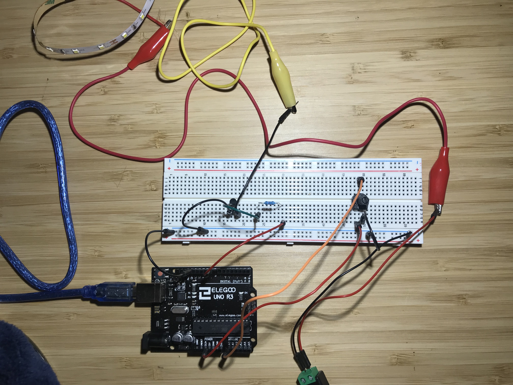
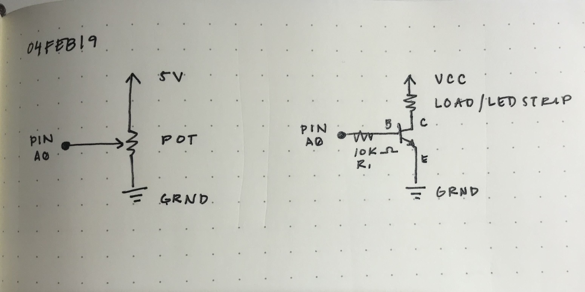

Reine Abubakar's Assignment 4
Code Snippet
// Reine Abubakar
// HCDE 439
// A4: High(er) voltage and transistors
// This program allows a potentiometer the control the brightness
// of a string of LED lights.
const int analogPotPin = A0; // Analog input pin where the potentiometer is attached
const int lightPin = 9; // Analog output pin where the LED lights are attached
int sensorValue = 0; // Measured potentiometer value
int lightBrightness = 0; // Value output to the LED lights
// Initializes once the board is reset
void setup() {
Serial.begin(9600); // Initializes serial communications at 9600 bps
pinMode(9, OUTPUT); // Initializes pin 9 as LED string light output
pinMode(A0, INPUT); // Initializes pin A0 as the potentiometer input
}
// Runs over and over
void loop() {
sensorValue = analogRead(analogPotPin); // Reads the potentiometer value
lightBrightness = map(sensorValue, 0, 1023, 0, 255); // Maps the value to the analog value out
analogWrite(lightPin, lightBrightness); // Turns on the light to the appropriate brightness
delay(10); // Delays the potentiometer reading by 10 ms
}
Circuit
The circuit is composed of one potentiometer and a string of LED lights. The potentiometer, as it's twisted, will determine the brightness of the LED string lights.
Schematic
When calculating the resistor required for the transistor, I had to take into consideration that the maximum current is 0.6A. I used a 10K ohm resistor since it was recommended by our lecturer. Therefore:
V = IR
5V = (0.6 A)(R)
R = 8.33 ohms
With a total of 5V, the minimum amount of resistance should be 8.33 ohms for there to be a safe 0.6A amount of current flowing through.
Calculating the current with my 10K ohm resistor:
V = IR
5V = (I)(10,000 ohms)
I = 0.0005 A
I = 0.5 mA
0.5mA < 0.6A
Circuit Operation

The brightness of the string lights depends on the value put out by the potentiometer as its knob is turned and the resistance changes. In this case, the potentiometer functions from a power of 5V, and it determines the brightness strength of the lights.